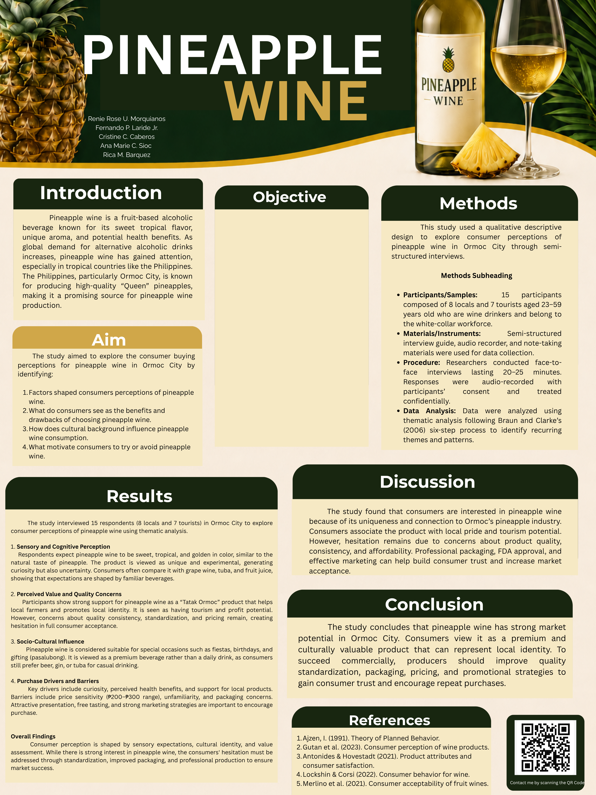

Digital References
Click the buttons below to access our research sources
Full Research Paper (PDF)
Adepoju, A. A., & Adeniji, A. A. (2017)
Agriculture MDPI. (2023)
Bethge, W.(2018)
City Government of Ormoc. (n.d.)
De Torre (2024) - PCAARRD
Escandon-Barbosa, D., & Rialp-Criado, A. (2018)
Lockshin, L., & Corsi, A. M. (2022)
Manila Bulletin. (2023)
Merlino, V. M., et al. (2021)
Phil. Social Science Journal. (2020)
Mindset, P. (2022)
Springer. (2023)